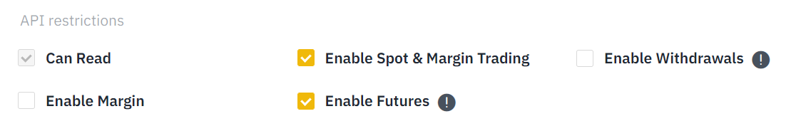
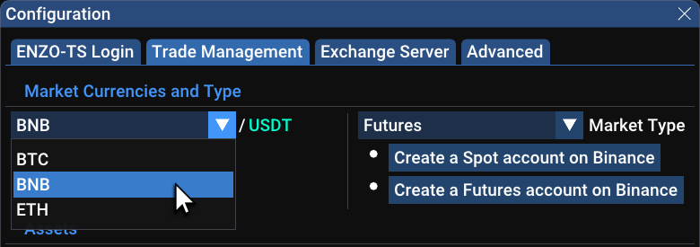
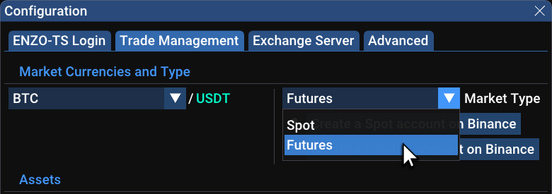
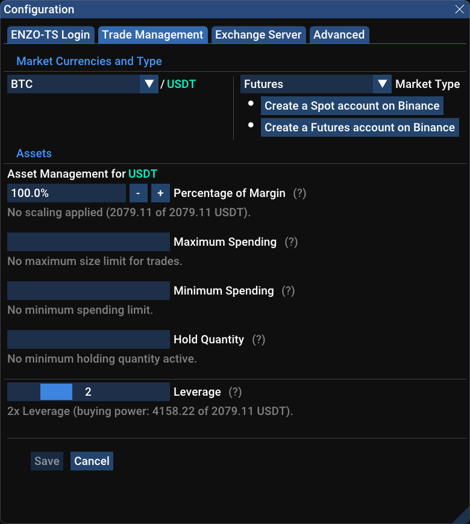
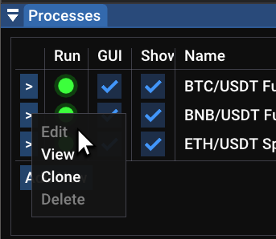

ENZO-TSC is a Trading System Client for cryptocurrencies, part of the ENZO-TS suite. It is based on proprietary technology by NEWTYPE K.K., Japan.
ENZO-TSC is a software that automatically executes trades on the your behalf utilizing our proprietary algorithmic models. We currently support BTC/USDT on the Binance exchange, with more options to come in the future.
Signals are generated by our fully-automated trading system running on proprietary algorithms. See the ENZO-TSC web page for more details on the system and the strategies implemented.
1.3 Requirements
A PC with Windows or Linux (Mac support is in the works)
A Binance Exchange account created with our referral:
This system should not be considered as a way to earn a steady income.
This software trades actual assets with actual monetary value. Cryptocurrencies are a high risk investment. The user is strongly advised to only invest in the amounts that he/she is willing to potentially lose.
Our trading model is built and tested to give a statistical edge over the market in the medium and long term. Profit can fluctuate sensibly depending on the market’s behavior. It’s important to let the system run with a stable investment for months at the time, in order for the statistical edge to be realized.
Apparent missed opportunities and streaks of losing trades may worry the user, but they are a natural part of the process. Winning and losing trades should not be over-analyzed. Some trades may seem clumsy from a human’s point of view. It’s important to understand that this is part of a model that is profit-focused and that is proven to be effective at the statistical level.
1.5 Quick Start (8 steps)
This is a bare minimum minimal guide to start trading. A more detailed guide will follow.
Launch the ENZO-TS installer and follow the instructions. Check the Run After Login option (suggested) if you want the client to run automatically when you log back in the computer.
Once the installation is complete, the ENZO-TSL launcher will start, which, in turn, will start the ENZO-TSC client. Notice that, by default, a ENZO-TSL launch icon will be created on the Desktop.
Once the data fetching is complete. The Status panel on the side of the window will present three buttons to configure the client.
Click on Set-up Login Credentials… to configure the access to the ENZO-TS Network. This is the network that provides real-time trading signals generated by our system.
Once logged into the network, the client will start receiving signals. Including recent history of trades, useful to judge recent performance of the trading models.
Click on New Binance Account… to create a new Binance account. A pop-up will appear. Click the button to create a Spot account. After that click the button to create a Futures account (suggested but not necessary). Accounts from those buttons will use our referral links, as required for the free license.
Click on Set-up API Keys… to set-up trading access to your Binance account. Without the API Keys, the client will be unable to execute trades on your behalf.
Go to Binance and purchase an amount of USDT that you’d like to trade.
Go to the Binance dashboard and enable the option “Using BNB to pay for fees ( 25% discount )”
Notice that the client will automatically purchase a small amount of BNB to be used for trading fees. You can disable this from the Fee Management section of the Status window.
Go to File→Configuration…→Trade Management and select the amount of funds that you’d like to use.
Notice that by default the trade size is limited to 100 USDT, this is intentionally set to an initial low number out of caution.
At the next start, the client will begin trading on the signals that it receives, with the amount specified.
If the exchange’s status says Trading Paused, click on the checkbox to change it to Trading Active.
You are now set for automatic trading. The client will do the rest. Just make sure that the connection is active. From time to time there may be some network errors coming from the exchange. In most cases the client is able to recover automatically, unless it’s a scheduled/unscheduled downtime from the exchange itself.
1.6 Connecting to the ENZO-TS Network
This is the network thought which the client obtains the trading signals.
1.6.1 Sign-up to Get the Login Credentials
To connect to the network, you will first need to sign-up for the service at the ENZO-TSC Signup page.
After your request for access is accepted, a one-time temporary key will be sent to you (this key can only be used once).
Go to File→Configuration…→ENZO-TS Login and insert login name & key in their relative fields.
Click on Save and Restart.
The client will quickly restart two times in a row, and finally connect to the TS Network.
Congratulations!
1.6.2 Store your Permanent Login Key
On the first connection, the one-time temporary key is automatically replaced with a permanent key. This is your personal key, and it shouldn’t be shared with anybody else. It is a good idea to store it in a safe place, such as a password manager. To do so, go back to File→Configuration…→ENZO-TS Login, and click on Copy to Clipboard to copy the key on the system clipboard.
Notice how the text below the key’s input field now reads “Valid key” instead of “Valid temporary key”.
NOTE: when creating a new client for a different market, simply copy & paste the Login Name and Login Key from the Configuration panel of an existing client. Do not attempt to reuse the one-time temporary key.
1.6.3 Previewing the Trading Signals
The trading signals come with a history of the activity of at least the last 30 days. This history allows to keep an eye on recent performance and display essential stats as well as individual trades.
To visualize the stats, select the Signals panel on the side of the application. This will show the recent performance (P&L), largest win and loss, Equity Curve (fluctuations of profit), and a few other values.
To visualize the individual trades, go to the head of the Chart window, next to Show Trades, uncheck Live and check Signal.
A series of colored crosses will mark the trades. Magenta crosses are Buy trades (acquire BTC), light-green crosses are Sell trades (return to USDT).
1.7 Connecting to the Exchange
In order to actually perform live trades, the client will need to communicate the orders to the exchange (Binance in this case) on your behalf. This is possible via a set of API & Secret keys that are designed for this purpose.
If you don’t yet have a set API keys, they can be easily created from the API Management page on Binance. When making a new set of keys, you’ll be asked for a name, choose anything that you wish. You will also need to choose a set of restrictions to apply. We suggest the following:
Option
Value
Necessary
Notes
Enable Spot & Margin Trading
On
Yes
For regular trading
Enable Futures
On
No
Must create a Futures account first
Enable Withdrawals
Off
No
Unnecessary security risk

IMPORTANT NOTICE: If you create a Futures account a new set of API Keys must be created in order to use those for futures trading. Although older API Keys created for Spot trading allow to choose Enable Futures, this is not enough. This is an interface issue with Binance and a common issue for the users.
Once obtained the Binance API keys, go to File→Configuration…→Exchange Server and insert the keys as required.
Click on Save and Restart. If everything goes well, the client will now connect with your API keys, enabling it to trade on your behalf (see the section below on how to actually enable funds for trading).
At this point the side Status panel should present some additional info coming from your account on the exchange server.
Under the Funds header:
Total Equity is the totality of your funds, valued in USDT for convenience.
Margin Used/Free is the amount of actual USDT that is used or that is free for trading.
Other Assets is the portion of your total equity that isn’t BTC nor USDT.
Trading Assets is the actual quantity of the assets relative to this market (in this case BTC and USDT).
Under the Fees Management header:
Status is the general status of the funds for the trading fees. This can be Good, Low or Insufficient.
Assets for Fees is the quantity of funds available to pay for trading fees.
Auto-Refill is an option to let the client automatically buy a small amount of BNB when necessary. This is enable dby default.
1.8 Choosing a Market
Since version 1.5.x, ENZO-TS allows to trade on multiple crypto pairs as well as on Futures market type.
Go to Menu File→Configuration…→Trade Management.

Select one of the available market pairs between BTC/USDT, BNB/USDT, ETH/USDT.
(NOTE: BUSD and USDC are also available in place of USDT, for those users that require it)

Select a market type between Spot and Futures. After having created the necessary Binance accounts.
1.8.1 Trading on Multiple Markets
It’s possible to operate on different markets at the same time. This is obtained by running multiple clients, each with their own settings. See the “The ENZO-TSL Launcher Application” section for instructions on how to add new clients.
NOTE: multiple clients should all run on different market pairs and market types combinations. For example, one client could run BTC/USDT Spot, another could run BTC/USDT Futures, but no two clients should run both on BTC/USDT Spot or both on BTC/USDT Futures, as this may generate confusion. On top of not having a practical value.
1.9 Preparing the Funds for Trading
In order for the client to execute trades, it’s necessary to purchase a wanted amount of USDT.
If you already have USDT on a Spot account and wish to trade on a Futures account, it’s possible to directly transfer funds from your Spot wallet to your Futures wallet, without any transaction fee. To Transfer funds go to your Futures account page on Binance and click on the Transfer button at the top right of the page.
Although the generation of orders is fully automated. You are ultimately responsible for deciding the amount of funds that should be used. The Trade Management options allow to do this, and they are very crucial for the success of the investment.
Go to Menu File→Configuration…→Trade Management.
Spot Management
Futures Management

Percentage of Total Equity allows to set the trade size as a percentage of the Total Equity of the account. If, for example, the account consists of 1,000 USDT and 0 BTC, then Total Equity is 1,000 USDT. If then the user sets the Percentage of Total Equity to 60%, then the trade size will be 600 USDT.
NOTE: on Futures markets the term Equity becomes Margin.
Maximum Spending is a maximum spending cap. Under no circumstances the system will attempt to spend more USDT than it’s established here. Out of caution, this value is initially set to 100 USDT. Feel free to change it or remove it completely once you’re confident to do so.
Minimum Spending allows to avoid taking trades if there isn’t a certain minimum amount of free USDT. This is useful in cases where the user doesn’t want to bother entering trades if there is a small amount of USDT available.
Hold Quantity is the amount of assets that the user wants to hold onto. A trade’s size will always account for this.
Leverage (futures markets only) is the amount of leverage to be used for all trades on this market. Leverage multiples the effect of both profit and loss of each trade. This means that both possible return and risk are magnified. The admitted values here are between 1x and 5x.
Leverage 1x has no effect. No added risk, nor profit.
Leverage 2x has relatively low risk, while allowing to double the profits.
Leverage 3x is an aggressive choice suitable for BTC. Use with caution with BNB and ETH, since those markets tend to be more volatile and bring more potential losses.
Leverage 4x and 5x are high-risk and should be used with extreme caution. Long-term usage may result in total loss of the assets. This is reserved for expert traders that are able to handle this level of risk.
1.9.1 Allocation of Funds Across Multiple Markets
When running multiple clients, it’s essential to consider the allocation of funds to each client.
The trading algorithms are statistically proofed for operating on an individual budget. Constant addition and subtraction of funds will create an imbalance that may lead to loss of profit. For a more detailed discussion on this, please see the “The Importance of a Stable Investment” section below.
With multiple clients operating on multiple markets, if each client tries, for example, to allocate 100% of the funds for a trade, only one of the clients will be able to trade during a give time frame. This starvation of activity may happen at an unfortunate time when a certain market would have performed better.
One simple way to avoid starvation of funds for clients it’s to allocate a proportional amount of funds for each client, utilizing the Percentage of Margin (or Percentage of Total Equity) parameter.
For example one may decide to run three clients with the following configuration: - BTC/USDT client: 60% of margin - BNB/USDT client: 20% of margin - ETH/USDT client: 20% of margin
In so doing, each client would continue to allocate always the same proportion of the funds for each trade. In short, this creates a condition of equity for all of the clients running on different markets.
Notice that Spot and Futures account utilize separate wallets. So, there is no conflict of funds in regard to running a client on a Spot market and another client on a Futures market.
1.9.2 The Importance of a Stable Investment
As a general rule, we suggest setting up the desired Percentage of Total Equity/Margin, to match the funds that you’d like to invest per-trade, and then refrain from modifying this value too often.
Continuously changing the size of the funds may adversely affect the final profit. Here is an example of how changing the trading size can worsen the performance:
The user starts with 1,000 USDT
The system makes 4 good trades, netting a +5% total profit (total earned: +50 USDT)
The user, feeling confident, decides to increase the funds from 1,050 to an even 2,000 USDT
The 5th trade is a -2.5% loss on the 2,000 USDT, or -50 USDT (total earned: 0 USDT)
This is a prime example of how changing the trade size at the “wrong time” can reset the profits.
Of course, things could have gone the other way, but it’s important to realize that any change to the funding scheme will affect the P&L in the immediate and it will break the consistency of the investment, whose statistical edge requires a stable investment across several dozen trades to be realized.
1.9.3 Risk Level and Stop-losses
Depending on the volatility of the market, our model risks from -2.5% to -3.5% of the capital afforded for each trade, with the potential to reach -4% per-trade in some rare cases.
When using leverage, this risk is multiplied. So, with stop-loss set at -3.5% and leverage set to 3x, the user is effectively risking -10.5% of the funds in a single trade!
For more details, see the ENZO-TSC product page.
1.10 The ENZO-TSL Launcher Application
The ENZO-TSL launcher is responsible for managing the ENZO-TSC application, which does the actual trading.
The launcher has two main functions:
Centralize the execution of all of the TSC client application.
Act as a watchdog, automatically restarting the TSC in case of a software malfunction.
At the very left of each entry, a context menu button allows to Edit, View, Clone or Delete an entry.

The Run power switch runs the relative TSC client instance. Notice that a general 10 seconds delay is applied when changing the state, this is in order to minimize errors from accidental clicks.
The GUI checkbox determines whether or not the TSC client will be launched with a user interface. Running clients without a GUI requires less resources. This is a good option to save memory, especially when running several clients that don’t require frequent reconfigurations.
The Show checkbox is used to show/hide the client’s window. This only applies to when the GUI is enabled. Notice that the client will continue to function correctly when the window is not visible. The benefit of hiding the client’s window is to reduce clutter and minimize CPU and GPU usage.
The Log and Process Log, respectively show the log of the launcher and the log of the selected process (the TSC client), as long as the entry in the TSL is selected with the mouse.
After the install a “Default” profile for a client is visible. To launch the client, simply check the Run button.
To add a new client for a different market, use the button Add New or Clone form the context menu. An edit window will appear to select a name for the profile. Then click Run to launch the new client and go to the Configuration Window to change the relevant market details.
If you already have a running client, Clone is the faster way to create a new client. This option makes a copy of the selected client, saving the time required to configure again the login credentials for the ENZO-TS network and the exchange connection.
NOTE: multiple clients should all run on different market pairs and market types combinations. For example, one client could run BTC/USDT Spot, another could run BTC/USDT Futures, but no two clients should run both on BTC/USDT Spot or both on BTC/USDT Futures, as this may generate confusion. On top of not having a practical value.
1.11 The ENZO-TSV Viewer Application
The viewer (ENZO-TSV) is a version of the client that cannot perform trades. This is useful to monitor the situation from a different computer.
For the TSV, a login to the ENZO-TS network is optional, and only needed to monitor the trade signals.
A login to the Binance account is however necessary. For this purpose we suggest using a set of API keys that has trading disabled, other than disabling withdrawal, since they are both unnecessary for the viewer.
1.12 The Log Window
The Log window shows raw text data mostly relative to the communication with the Exchange. Most of the data can be ignored, but it may be useful to look for the occasional red-colored (error) or orange-colored (warning) messages.
In case of mistyping of a key, the exchange will respond with an uncorrelated error, since there’s no mechanism to verify that a key is valid.
This software can only trade on your behalf on the BTC/USDT market, however, when generating API Keys, it’s suggested to not enable the withdrawal access. Withdrawal access is unnecessary and it may be a security risk, would the keys end up in the wrong hands.
API Keys are only visible to the user. This software will never try to communicate them to our server or anywhere else.
This software stores keys on a local configuration file. The Secret key will be encrypted. This is an added form of security, however the user should still refrain from sharing their own configuration file to others.
1.14 Extra Features
1.14.1 Market Watch
This window gives are real-time view of the most active crypto pairs on Binance. The Change value allows to filter out markets where price has little or no movement. The Health value filters out those markets with poor liquidity. This is a very important metric, since markets with poor liquidity will often show sudden spikes in price only because of the relative lack of activity.
Market Watch
Above is a view of the Market Watch. Here the criteria selects only 10 markets out of 714 possible.
As a reminder, the current version of ENZO-TSC only supports BTC/USDT signals. This feature is meant for advanced user that wants to keep an eye on other markets.
1.15 Contacts
You can reach us via the dedicated on-line contact form, or via email us at info@enzobot.com .